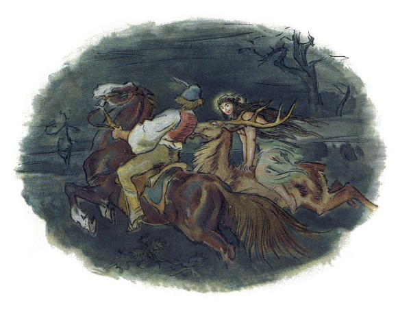
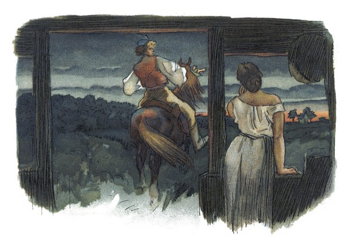
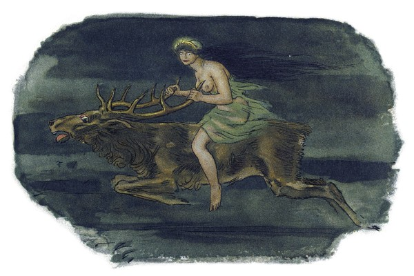
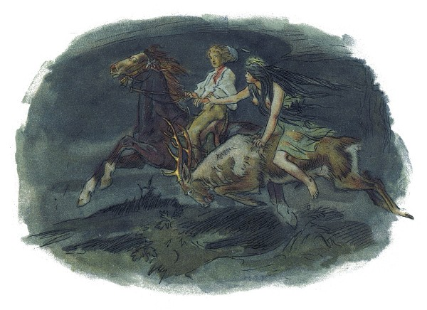
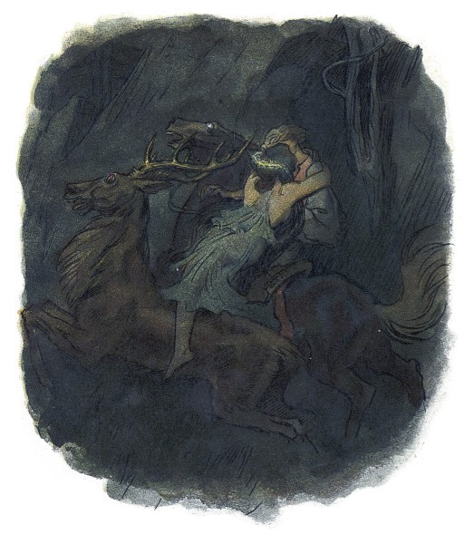
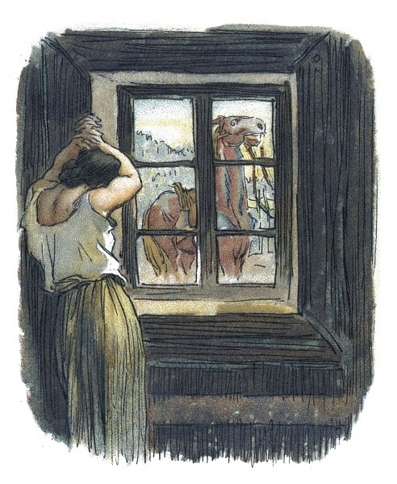

Večer před svatým Janem
mluví sestra s Tomanem:
„Kam pojedeš, bratře milý,
v této pozdní na noc chvíli
na koníčku sedlaném,
čistě vyšperkovaném?“
„Do Podhájí k myslivci
musím ke své děvčici;
z nenadání nemám stání,
zas mě čekej o svítání.
Dej, sestřičko, dej novou
košiličku kmentovou,
kamizolku růžovou.“
Jiskra padla pod koníčkem,
sestra volá za bratříčkem:
„Slyš, Tománku, radu mou,
nedávej se doubravou:
Objeď dolem k Svaté hoře,
ať nemám po tobě hoře,
dej se raděj v zápolí,
ať mě srdce nebolí.“
Nejel Toman doubravou,
dal se cestičkou pravou;
a v Podhájí u myslivce
nový domek jedna svíce,
hostí mnoho pospolu,
jizba plna hovoru.

Smutkem Toman obklopen
patří s koně do oken:
děvče láskou jen rozplývá,
na ženicha se usmívá;
otec jedná námluvy,
matka hledí obsluhy.
Jedli, pili, rozprávěli,
dobrou vůli spolu měli,
žádný na to nic nedbal,
kůň že venku zařehtal,
a mládenec zavzdychal.
Panna jenom snoubená
najednou se zarděla;
svědomí ji přece tlačí,
šeptá cosi sestře mladší.
Sestřička od večeře
vyšla rychle za dvéře:
„Na věky se, Tomane,
milá s tebou rozstane,
jinému se dostane.
Najezdil jsi se k nám dosti,
dnes tu máme bližší hosti,
hledej sobě jinde štěstí.“
Toman koněm zatočil,
v šíré pole poskočil,
zaťal zuby, smračil čelo,
kolem všecko neveselo.
Půlnoc byla, měsíc zašel,
sotva jezdec cestu našel;
prudce hned, pak loudavě
ubíral se k doubravě.
„Všecky krásné hvězdičky
ze tmy jsou se prosypaly,
proč vy, moje mladé dni,
ve tmách jste se zasypaly!“
Jede, jede doubravou,
les šumí mu nad hlavou,
větřík chladný z noci fouká,
nad ouvalem sova houká;
koník blýská očima,
koník stříhá ušima.
Cupy dupy z houštiny
letí jelen v mejtiny,
na jelínku podkasaná
sedí sobě lesní panna;
šaty půl má zelené,
půl kadeřmi černěné,
a ze svatojanských broučků
svítí pásek na kloboučku.

Třikrát kolem jak střela
v běhu koně objela,
pak Tomanovi po boku
vyrovnává v plavném skoku:
„Švarný hochu, nezoufej,
bujným větrům žalost dej,
jedna-li tě opustila,
nahradí to stokrát jiná.
Švarný hochu, nezoufej,
bujným větrům žalost dej!“
To když sladce zpívala,
v oči se mu dívala
lesní panna na jelenu,
Toman cítí v srdci změnu.

Jedou, jedou pospolu
měkkým mechem do dolu,
panna Tomanu po boku
vyrovnává v plavném skoku:
„Švarný hochu, skloň se, skloň,
jenom dále se mnou hoň;
líbí-li se ti mé líce,
dám radostí na tisíce.
Švarný hochu, skloň se, skloň,
jenom dále se mnou hoň!“
To kdy panna zpívala,
za ruku ho ujala;
Tomanovi rozkoš proudem
prolila se každým oudem.
Jedou, jedou dál a dál
podlé řeky, podlé skal,
panna Tomanu po boku
vyrovnává v plavném skoku:
„Švarný hochu, můj jsi, můj!
K mému bytu se mnou pluj;
světla denního v mém domě
věčně nezachce se tobě.
Švarný hochu, můj jsi, můj —
k mému bytu se mnou pluj!“
To kdy panna zpívala,
v ústa jezdce líbala,
v náručí ho objala.
Tomanovi srdce plesá,
uzdu pouští, s koně klesá
pod skalami prostřed lesa.

Slunce vyšlo nad horu,
skáče koník do dvoru,
smutně hrabe podkovou,
řehce zprávu nedobrou.
Sestra k oknu přiskočila,
a rukama zalomila:
„Bratře můj, bratříčku můj,
kde skonal jsi život svůj!“
